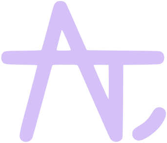

<header>
  <a href="./index.html">
    
  </a>

  <ul id="navigatie">
    <li class="navigatie-item"><a href="./index.html">Home</a></li>
    <li class="navigatie-item"><a href="./about.html">Over mij</a></li>
    <li class="navigatie-item"><a href="./projects.html">School projecten</a></li>
  </ul>

  <script>
    $(document).ready(function ()
    {
      var currentPage = window.location.href;
      $(".navigatie-item a").each(function ()
      {
        var linkURL = $(this).attr("href").replace("./", "");
        if (currentPage.indexOf(linkURL) > -1)
        {
          $(this).attr("id", "active-link");
        }
      });
    });
  </script>
</header>
